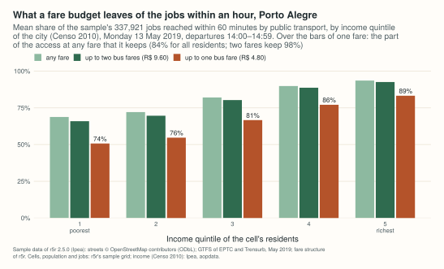

Example: who reaches the jobs in Belo Horizonte, and what a fare budget leaves¶
How many jobs can a resident reach in an hour by bus, and does the answer depend on how much the household earns? This example measures it for Belo Horizonte from the city's official GTFS feed, on the grid of Ipea's Access to Opportunities Project, and then, in Porto Alegre, asks what is left of that access when the fare is limited.
It is the Python half of a larger example: the R article does the same for São Paulo and Rio de Janeiro too, compares the three cities, and explains which capitals were left out and why. The numbers printed here for Belo Horizonte and Porto Alegre are the ones of that article; they were computed on 2026-11-12. It needs geopandas 1.0 or later and, to cut the extract, osmium.

site/figures/capitals.R in the repository.The data¶
| Data | Source | Licence |
|---|---|---|
| Streets | OpenStreetMap, extract of the Sudeste region by Geofabrik, dated 2026-11-01 (863 MB) | ODbL 1.0 |
| GTFS | Superintendência de Mobilidade de Belo Horizonte (SUMOB), "GTFS": the conventional and the supplementary bus systems, by timetable; no metro. Version 202611111921 (52 MB); the address always serves the current file, rewritten every day | CC BY |
| Municipal boundary | IBGE, malhas municipais (API, version 3) | public data, IBGE |
| Cells, population, income | Ipea, Access to Opportunities Project, data release v1.0.0 of aopdata: H3 cells of resolution 9 with the residents and the household income per person of the Censo 2010 | the aopdata repository is MIT; no separate licence for the data is stated. Ipea asks for the citations at the end of this page |
| Jobs, schools, health facilities | the same release, land use of 2019: formal jobs (RAIS), public schools, public health facilities, per cell | same |
| Porto Alegre | the sample data of r5r 2.5.0: OpenStreetMap extract, GTFS of EPTC and Trensurb of May 2019, grid, and a fare structure | r5r is under GPL (>= 3) or MIT, at the user's choice; map data ODbL |
The public transport is of November 2026; the residents and their income are those of 2010 (the Censo 2022 has no income by census tract yet) and the jobs those of 2019.
import datetime as dt
import gzip
import hashlib
import os
import shutil
import subprocess
import urllib.request
import zipfile
from pathlib import Path
import geopandas as gpd
import numpy as np
import pandas as pd
import peabiru
data_dir = Path(os.environ.get("PEABIRU_EXAMPLE_DATA", "capitals-data"))
raw = data_dir / "raw"
raw.mkdir(parents=True, exist_ok=True)
def fetch(url, name=None, folder=raw):
dest = folder / (name or url.rsplit("/", 1)[1])
if not dest.exists():
part = dest.with_suffix(".part")
request = urllib.request.Request(url, headers={"User-Agent": "peabiru-docs-examples"})
with urllib.request.urlopen(request) as response, open(part, "wb") as out:
# IBGE's API sends its answer gzip-compressed, asked or not
gz = response.headers.get("Content-Encoding") == "gzip"
shutil.copyfileobj(gzip.GzipFile(fileobj=response) if gz else response, out)
part.rename(dest)
return dest
def aop(name):
return fetch("https://github.com/ipeaGIT/aopdata/releases/download/v1.0.0/" + name)
sudeste = fetch("https://download.geofabrik.de/south-america/brazil/sudeste-261101.osm.pbf")
feed = fetch("https://s3.amazonaws.com/mobilibus-uploads/gtfs/GTFSBHTRANS.zip", "bhtrans.zip")
print(f"{feed.stat().st_size / 1e6:.1f} MB, sha256", hashlib.sha256(feed.read_bytes()).hexdigest()[:16])
52.2 MB, sha256 15d3b184fe8e1e3a
A later download is another version of the network and gives other numbers; the checksum (its first 16 digits) identifies the file used here.
The network¶
The streets are cut around the municipality and the stops of the feed, with
3 km to spare; build_network() reads the directory with the cut and the
feed.
utm = 31983 # SIRGAS 2000 / UTM zone 23S, in metres
boundary = gpd.read_file(fetch(
"https://servicodados.ibge.gov.br/api/v3/malhas/municipios/3106200"
"?formato=application/vnd.geo+json&qualidade=maxima", "3106200.geojson")).to_crs(utm)
with zipfile.ZipFile(feed) as z, z.open("stops.txt") as f:
stops = pd.read_csv(f, usecols=["stop_lon", "stop_lat"]).dropna()
stops = gpd.GeoSeries(gpd.points_from_xy(stops["stop_lon"], stops["stop_lat"]), crs=4326).to_crs(utm)
# 30 segments per quarter circle, as sf's st_buffer()
area = boundary.make_valid().union_all().union(stops.union_all().convex_hull).buffer(3000, quad_segs=30)
folder = data_dir / "bho" / "network"
folder.mkdir(parents=True, exist_ok=True)
shutil.copyfile(feed, folder / "bhtrans.zip")
polygon = data_dir / "bho" / "cut.geojson"
gpd.GeoSeries([area], crs=utm).to_crs(4326).to_file(polygon)
pbf = folder / "bho.osm.pbf"
subprocess.run(["osmium", "extract", "--overwrite", "-p", str(polygon), str(sudeste),
"-o", str(pbf)], check=True)
network = peabiru.build_network(folder)
print(f"{area.area / 1e6:.0f} km2, {pbf.stat().st_size / 1e6:.1f} MB")
print(network.info())
696 km2, 6.4 MB
{'vertices': 107414, 'edges': 286400, 'elevation': 'NONE', 'feeds': ['bhtrans'], 'stops': 9924, 'patterns': 1118, 'services': 14, 'frequencies': False}
Two checks before routing: build_network() refuses a feed with errors of
high priority, and
get_gtfs_errors() lists the others;
check_transit_availability() says how
much of the feed runs on the day chosen, Tuesday 17 November 2026.
print(len(peabiru.get_gtfs_errors(network)), "GTFS errors")
print(peabiru.check_transit_availability(network, dates=dt.date(2026, 11, 17)).to_string(index=False))
0 GTFS errors
date total_services active_services pct_active
2026-11-17 14 2 0.142857
Few services run because the calendar has one service per kind of day and of system, and only the weekday ones are due on a Tuesday.
Residents, income and opportunities¶
Ipea's grid has, for each cell, the residents (P001), the average
household income per person (R001), the income decile of the cell among
the residents of the city (R003, 1 the poorest tenth), and the formal jobs
(T001), public schools (E001) and public health facilities (S001).
Each cell is routed from, and to, its centre.
grid = gpd.read_file(aop("hex_grid_bho.gpkg"))[["id_hex", "geometry"]]
people = pd.read_csv(aop("population_2010_bho.csv"))[["id_hex", "P001", "R001", "R003"]]
land = pd.read_csv(aop("landuse_2019_bho.csv"))[["id_hex", "T001", "E001", "S001"]]
cells = grid.merge(people, on="id_hex").merge(land, on="id_hex")
cells.columns = ["id", "geometry", "population", "income", "decile", "jobs", "schools", "health"]
centre = cells.geometry.to_crs(utm).centroid.to_crs(4326)
cells["lon"] = centre.x.round(6)
cells["lat"] = centre.y.round(6)
print(len(cells), "cells,", (cells["population"] > 0).sum(), "inhabited,",
cells["population"].sum(), "residents,", cells["jobs"].sum(), "jobs,",
cells["schools"].sum(), "schools,", cells["health"].sum(), "health facilities")
3049 cells, 2548 inhabited, 2409892 residents, 720512 jobs, 544 schools, 341 health facilities
Access at the morning peak¶
For every inhabited cell, the jobs, schools and health facilities of the municipality reached within 30 and within 60 minutes, door to door, walking and riding, leaving at each minute from 07:00 to 07:59; the travel time to each destination is the median of those 60 departures.
table = pd.DataFrame(cells.drop(columns="geometry"))
origins = table[table["population"] > 0]
destinations = table[table["jobs"] + table["schools"] + table["health"] > 0]
a = peabiru.accessibility(
network, origins, destinations, opportunities_colnames=["jobs", "schools", "health"],
mode=["WALK", "TRANSIT"], departure_datetime=dt.datetime(2026, 11, 17, 7, 0),
time_window=60, percentiles=50, cutoffs=[30, 60], max_trip_duration=60, seed=42,
progress=False,
)
a["what"] = a["opportunity"] + "_" + a["cutoff"].astype(str)
wide = a.pivot(index="id", columns="what", values="accessibility")
access = origins.merge(wide, left_on="id", right_index=True)
share = access["jobs_60"] / table["jobs"].sum()
order = np.argsort(share.to_numpy())
half = np.searchsorted(np.cumsum(access["population"].to_numpy()[order]),
access["population"].sum() / 2)
print(len(origins), "origins x", len(destinations), "destinations")
print(f"mean {100 * np.average(share, weights=access['population']):.1f}%, "
f"median {100 * share.to_numpy()[order][half]:.1f}% of the jobs within an hour")
2548 origins x 2330 destinations
mean 58.7%, median 71.2% of the jobs within an hour
What these numbers are not. They count only the opportunities inside the municipality, and only what the feed has: buses, without the metro line. Timetables are what the agency planned, not what ran. Formal jobs leave out informal work.
By income¶
The cells of each income decile, weighted by their residents: the mean share of the city's jobs within an hour, and of its public schools and health facilities within half an hour. The Palma ratio of access is the mean of the richest tenth over the mean of the poorest four tenths.
def by_decile(column):
rows = access.dropna(subset="decile")
share = rows[column] / table[column.split("_")[0]].sum()
mean = lambda r: np.average(share[r.index], weights=r["population"])
means = rows.groupby("decile").apply(mean, include_groups=False)
palma = mean(rows[rows["decile"] == 10]) / mean(rows[rows["decile"] <= 4])
means.index = means.index.astype(int)
return pd.concat([(100 * means).round(1), pd.Series({"palma": round(palma, 2)})])
result = pd.DataFrame({c: by_decile(c) for c in ["jobs_60", "schools_30", "health_30"]})
print(result.to_string(float_format="{:g}".format))
jobs_60 schools_30 health_30
1 31.9 3.4 3.2
2 33.1 4.1 3.5
3 46.5 4.9 4.7
4 49.5 5.1 4.7
5 58.2 5.6 6.3
6 59.8 6 7.7
7 67.9 6.6 10.6
8 76.4 7.6 13.7
9 81.4 8.6 18.1
10 82.2 7.4 21.5
palma 2.04 1.66 5.32

Time against fare¶
A fare is a limit of its own: the fastest trip is of little use to someone
who cannot pay for its transfers. peabiru routes with fares: a
fare structure says what each ride costs and which transfers are
discounted, max_fare keeps the fastest trip within a budget, and
pareto_frontier() gives the travel time at each
budget.
Belo Horizonte's feed has the fares by line, but its rules cannot be written faithfully as a fare structure (a transfer inside a MOVE station costs nothing, a second ride within 90 minutes costs half the cheaper fare); the R article has the details. So this part uses Porto Alegre: the sample data listed above (the centre and the neighbourhoods around it, as of May 2019) and its fare structure. The feeds only have service in the afternoon, so the departures are from 14:00 to 14:59 of Monday 13 May 2019.
poa_url = "https://raw.githubusercontent.com/ipea/r5r/v2.5.0/r-package/inst/extdata/poa/"
poa_dir = data_dir / "poa" / "network"
poa_dir.mkdir(parents=True, exist_ok=True)
for name in ["poa_osm.pbf", "poa_eptc.zip", "poa_trensurb.zip"]:
fetch(poa_url + name, folder=poa_dir)
poa = peabiru.build_network(poa_dir)
fares = peabiru.read_fare_structure(fetch(poa_url + "fares/fares_poa.zip", folder=poa_dir.parent))
print(fares["fares_per_type"].to_string(index=False))
print(fares["fares_per_transfer"].to_string(index=False))
print(fares["max_discounted_transfers"], fares["transfer_time_allowance"])
type unlimited_transfers allow_same_route_transfer use_route_fare fare
BUS False False False 4.8
RAIL True False False 4.5
first_leg second_leg fare
BUS BUS 7.20
RAIL BUS 8.37
BUS RAIL 8.37
1 60
A bus ride costs R$ 4.80 and a train ride R$ 4.50; two buses within 60 minutes cost R$ 7.20 together, a bus and a train R$ 8.37; one discounted transfer per trip.
The cells are the sample's grid (the same H3 cells as Ipea's), with the
income quintile of each cell in the whole city (R002).
poa_cells = pd.read_csv(fetch(poa_url + "poa_hexgrid.csv", folder=poa_dir.parent))
income = pd.read_csv(aop("population_2010_poa.csv"))[["id_hex", "R002"]]
poa_cells = poa_cells.merge(income, left_on="id", right_on="id_hex", how="left")
poa_cells = poa_cells.rename(columns={"R002": "quintile"}).drop(columns="id_hex")
poa_cells["jobs"] = poa_cells["jobs"].fillna(0) # five cells of the sample have no count
poa_origins = poa_cells[poa_cells["population"] > 0]
poa_destinations = poa_cells[poa_cells["jobs"] > 0]
What a budget leaves¶
The jobs within an hour with at most one bus fare (R$ 4.80: a single ride), at most two (R$ 9.60: enough for either discounted transfer), and at any fare:
poa_departure = dt.datetime(2019, 5, 13, 14, 0)
def with_budget(max_fare):
a = peabiru.accessibility(
poa, poa_origins, poa_destinations, opportunities_colnames="jobs",
mode=["WALK", "TRANSIT"], departure_datetime=poa_departure, time_window=60,
percentiles=50, cutoffs=60, max_trip_duration=60, fare_structure=fares,
max_fare=max_fare, draws_per_minute=1, progress=False,
)
return a.set_index("id")["accessibility"].reindex(poa_origins["id"]).to_numpy()
budget = poa_origins[["id", "population", "quintile"]].assign(
one=with_budget(4.8), two=with_budget(9.6), any=with_budget(float("inf")))
def kept(rows):
m = {b: np.average(rows[b], weights=rows["population"]) for b in ["one", "two", "any"]}
return pd.Series({"jobs_any_fare": round(m["any"]),
"kept_one_fare": round(100 * m["one"] / m["any"], 1),
"kept_two_fares": round(100 * m["two"] / m["any"], 1)})
by_quintile = budget.groupby("quintile").apply(kept, include_groups=False)
by_quintile.index = [str(int(q)) for q in by_quintile.index]
by_quintile.loc["all"] = kept(budget)
print(by_quintile.to_string(float_format="{:g}".format))
jobs_any_fare kept_one_fare kept_two_fares
1 232415 73.7 95.9
2 243639 75.9 96.6
3 277392 81.2 97.8
4 303605 85.8 98.7
5 316121 89 98.9
all 288518 84.1 98.2

With fares the router samples departures in the window
(draws_per_minute=1: one per minute) instead of trying every minute.
One bus fare, which pays a single ride, keeps 84% of the jobs that the
average resident of the sample reaches at any fare, and two fares 98%; the
loss is larger where incomes are lower: in the poorest fifth, one fare keeps
74%, in the richest 89%. The sample is the centre of the city only, so read
the gradient rather than the levels.
The frontier of a trip¶
pareto_frontier() gives, for a pair, the travel
time at each fare cutoff where it changes: here the median over the
departures of the hour, for three trips (the names of the neighbourhoods are
OpenStreetMap's).
pairs = [("89a9012aed3ffff", "89a9012aa7bffff", "Cavalhada to Praia de Belas"),
("89a9012aa7bffff", "89a9012992bffff", "Praia de Belas to Navegantes"),
("89a9012830bffff", "89a901284c7ffff", "Petrópolis to Teresópolis")]
for origin, destination, trip in pairs:
pf = peabiru.pareto_frontier(
poa, poa_cells[poa_cells["id"] == origin], poa_cells[poa_cells["id"] == destination],
departure_datetime=poa_departure, time_window=60, fare_structure=fares,
fare_cutoffs=[0, 4.5, 4.8, 7.2, 8.37, 9.6, 12], seed=42, progress=False,
)
steps = ", ".join(f"R$ {c:.2f}: {t} min" for c, t in zip(pf["monetary_cost"], pf["travel_time"]))
print(f"{trip}: {steps}")
Cavalhada to Praia de Belas: R$ 0.00: 78 min, R$ 4.80: 30 min, R$ 7.20: 29 min
Praia de Belas to Navegantes: R$ 4.50: 99 min, R$ 4.80: 89 min, R$ 7.20: 48 min, R$ 12.00: 47 min
Petrópolis to Teresópolis: R$ 0.00: 106 min, R$ 4.80: 90 min, R$ 7.20: 74 min, R$ 12.00: 69 min

Along a corridor, one fare is all it takes: a second ride saves a minute.
Across town, one fare buys a trip of an hour and a half, most of it walking
to a line that goes there directly, and the discounted transfer cuts it to
48 minutes. A budget of R$ 0 is the walk, when it fits in the two hours of
max_trip_duration.
The trips themselves¶
trip_options(), peabiru's own planner, lists the
trips worth considering between two points: those that no other trip beats
on the chosen criteria at once. From Jardim Carvalho, in the east, to Praia
de Belas, leaving at 14:19:
res = peabiru.trip_options(
poa, poa_cells[poa_cells["id"] == "89a9012917bffff"],
poa_cells[poa_cells["id"] == "89a9012aa7bffff"],
departure_datetime=dt.datetime(2019, 5, 13, 14, 19), time_window=1,
criteria=["TIME", "FARE", "TRANSFERS"], fare_structure=fares, drop_geometry=True,
progress=False,
)
print(res.options[["option", "total_time", "fare", "transfers", "walk_time",
"description"]].to_string(index=False))
option total_time fare transfers walk_time description
1 52.6 12.0 2 9.3 WALK > BUS 441 > BUS 4924 > BUS 173 > WALK
2 56.8 7.2 1 20.9 WALK > BUS 441 > BUS 187 > WALK
3 86.2 4.8 0 64.8 WALK > BUS 375 > WALK

Three buses take 53 minutes and cost R$ 12.00; two, with the transfer
discount, 57 minutes for R$ 7.20; a single bus costs R$ 4.80 and takes 86
minutes, 65 of them on foot. res.itineraries has the legs of each option,
with their geometry unless drop_geometry=True.
What is measured, and what is not¶
- Planned service, one day, one hour: timetables as published; no delays, no crowding.
- The feed's limits: Belo Horizonte's buses, without the metro; trips cannot leave the area cut around the city, and destinations are those of the municipality.
- Old people, old jobs, new buses: residents and income from the Censo 2010, opportunities from 2019, public transport from 2026.
- Fares: Porto Alegre's are the sample's structure for its 2019 network, not checked here against the tariff decrees of that year, on a part of the city and an afternoon hour.
Sources and citation¶
Map data © OpenStreetMap contributors, under the ODbL. GTFS: Superintendência de Mobilidade de Belo Horizonte (CC BY); EPTC and Trensurb, as cut for the sample data listed above. Boundary © IBGE. Cells, population, income, jobs, schools and health facilities:
- Pereira, R. H. M. et al. (2022). Distribuição espacial de características sociodemográficas e localização de empregos e serviços públicos das vinte maiores cidades do Brasil. Texto para Discussão 2772, Ipea. https://doi.org/10.38116/td2772
- Pereira, R. H. M. et al. (2022). Estimativas de acessibilidade a empregos e serviços públicos via transporte ativo, público e privado nas 20 maiores cidades do Brasil em 2017, 2018, 2019. Texto para Discussão 2800, Ipea. https://doi.org/10.38116/td2800